01
认识双胞胎圆圈兄弟的人都知道他们哥俩没有喝过母乳，作为圆圈妈的我只能一笑而过了！
注意，是苦涩无奈的笑！
圆圈小月龄那会儿推出去外面散步，我总是被好心的大妈们关心地问：“哎呦，同时养俩娃，奶水够吗？看你憔悴的啊，得多吃啊！不然哪来的奶水啊！”
“嗯！呵呵!”我的奶水怎么会不够呢。
剖腹产后第一天，乳房就开始发涨发硬，因为没经验，不知道那是啥意思，术后第二天清晨，发现衣服前襟湿了一片。
护士查房看到责怪我：“你已经有奶水了，怎么不挤出来装到奶瓶里，送到新生儿科？”
我才知道原来乳房偶尔冒出来的一滴滴像稀米汤的乳白色液体是初乳。
因为不打算喂母乳，我让医生给我开了溴隐亭（一种回奶药）。
不知道医生开的溴隐亭是不是假药，还是药效不够猛，吃了溴隐亭，奶水依然源源不断地冒出来。
这要是都能给圆圈喝上，可以省一大笔奶粉钱啊！
02
隔壁床的双胎妈妈无比羡慕嫉妒恨地看着我，眼神透露着天意弄人的无奈感。
因为她比我早两天剖腹产，直到产后第四天依然没有开奶，饿得她的两个龙凤宝宝哭得撕心裂肺，后来她的家人高价请了催乳师终于疏通开奶了。
可她依然愁眉苦脸，因为催乳的时候，需要使劲按摩乳房，那种感觉也不好受，反正整个爱婴区都是她疼得哭天抢地的声音。
只有我心里静如死灰，不能喂母乳的妈妈就此飘过了。
我孕期学习的喂母乳方法是用不上了，正好这几天孖仔帮双胞胎妈妈喂养群有宝妈咨询如何同时给双胞胎宝宝喂母乳！
好吧，打算把私藏的喂母乳经验分享给大家！
现在再看这些组图，觉得喂母乳的妈妈真伟大，同时给双胞胎宝宝喂母乳的妈妈更伟大！
没有钱请保姆，或者没有家里人帮忙的宝妈，强烈推荐学习下面这位宝妈的“高难度”喂母乳技巧，可以省事省力又省心！
以下经验分享来源于网上一双胎宝妈的真人亲自示范如何同时给双胞胎宝宝喂母乳。
1
准备工作
先把最重要的东西准备好，比如：枕头,棉被,毛巾,哺乳枕。
其次，要对自己有信心，刚开始尝试确实困难重重，加上宝宝就像毛毛虫般的软绵绵,更是不敢乱动。但其实宝宝并没有我们想象中的脆弱。
慢慢来就好！
最后，千万不要因为宝宝开始哇哇大哭,就慌了手脚...没有尝试怎么知道行不行呢？
好啦！开始咯！
1
第一步
先把枕头放好，粉红色枕头是准备垫宝宝用的，蓝色枕头是给妈妈靠背用的。
不要小看这个靠背，妈妈一定要有个舒适喂奶的姿势，不然半个小时后，腰酸背痛腿抽筋绝对会缠上你。
2
第二步
粉红色枕头靠墙一端各摆一块毛巾(注意，需要有点高度哦)，另一端放宝宝的小枕头，没有小枕头,用小毛巾也可以。
3
第三步
先把一个宝宝放在枕头上，左右边都ok，看你哪边比较顺手。
建议先放较安静的宝宝,不然宝宝哭闹不配合从枕头上滚下去（我当时不熟练时，常常让宝宝滚下去！囧！）
这时妈妈可以在腰上套上哺乳枕了。
4
第四步
另一个宝宝则放在正前方的另一侧Stand By，等一下抱上枕头会比较顺手。
5
第五步
把枕头上的宝宝先扶起来放到哺乳枕上面。
6
第六步
扶上哺乳枕之后帮他调整好位置。
7
第七步
尽量贴近妈妈的身体。
8
第八步
枕头上的毛巾刚好给宝宝垫脚，如果没有毛巾，宝宝也会因为有高度差,很容易再次滑下去.....
9
第九步
记得盘腿时，先把膝盖抬高一点，利用哺乳枕+膝盖,把宝宝固定卡在一侧，才不会让宝宝滚落下来。
10
第十步
轻轻向前弯身,抱起前方另一个宝宝。
请注意手臂，注意身体不要用力压到哺乳枕上的宝宝。
此时会因为身体向前,会有点"乳压"宝宝，但没有关系。
如果不放心，可以先把上面宝宝的头暂时移开你的胸部。
11
第十一步
轻轻将另一个宝宝移到哺乳枕的另一侧，
12
第十二步
调整好含乳的位置，就可以在宝宝的头下方放置小枕头来做固定。
13
第十三步
这样就OK了~固定好宝宝，膝盖就能放松，如果宝宝有移动或滑落，都可以抓住宝宝的腋下,将身体调整回正确的含乳姿势。
此时都均需要同时抬高膝盖，免得调好左边,右边的滚下去....
注意， 喂奶时，双臂夹住宝宝的背部,会让宝宝更固定!
温馨提示：
刚开始,我不是用枕头，而是在两侧放上与腋下同等高度的棉被，那就一点也不怕宝宝滚下去，等到熟练一点，再来用枕头就很得心应手!
此方式也适用一个宝宝的"橄榄球式喂法"
希望我的方式能分享给想要同时给双胞胎宝宝喂母乳的新手妈妈们，一起轻松享受和宝贝们的亲密时光。
母乳妈妈们加油吧!
END
本文转载自孖仔帮，专注双胞胎育儿经验分享，著作权归孖仔帮所有。
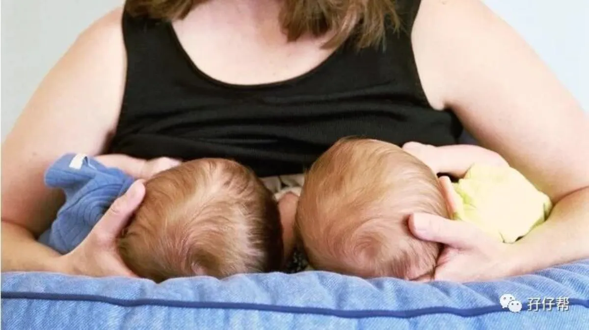
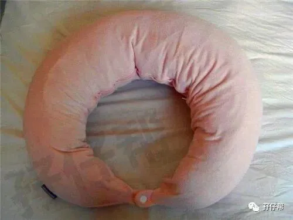
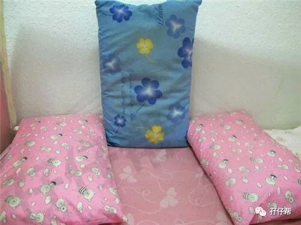
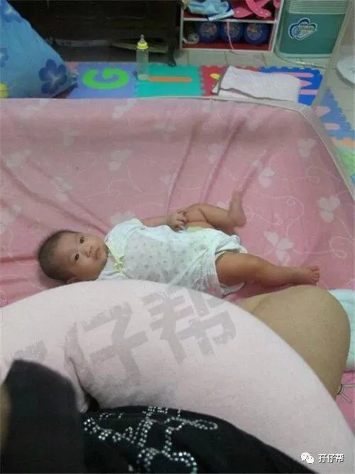
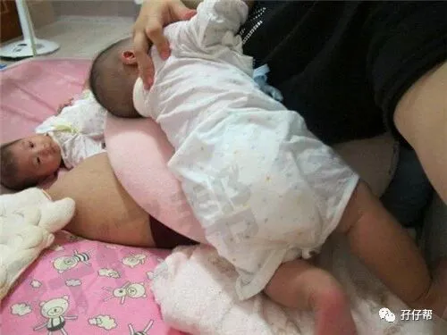
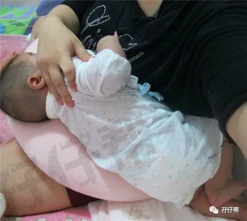
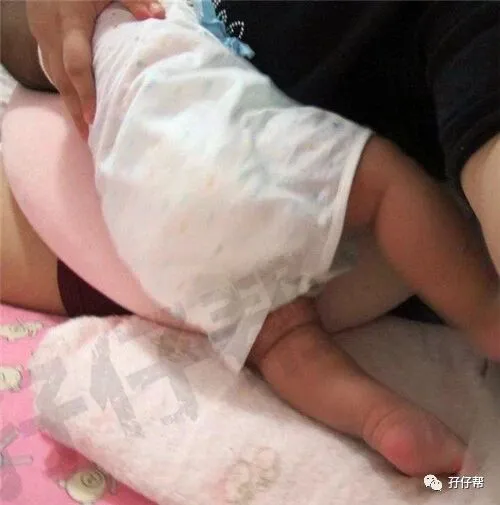
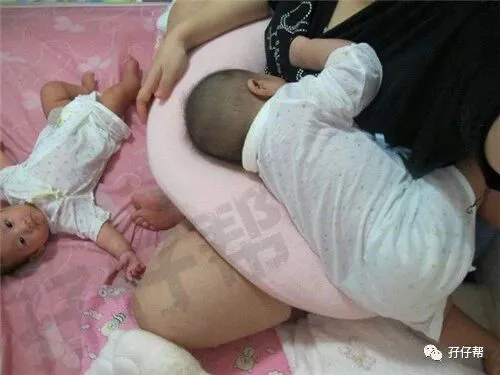
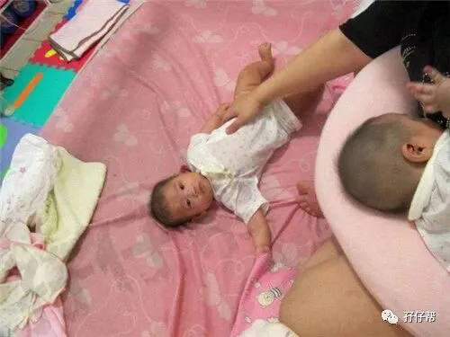
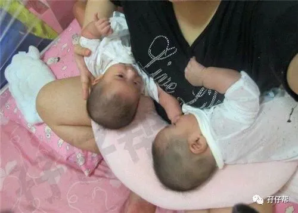
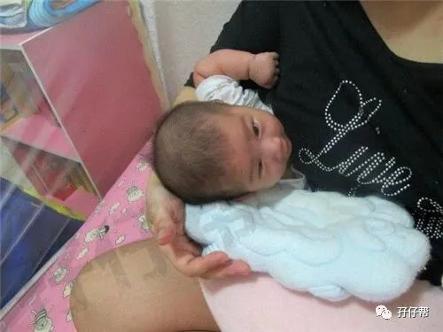
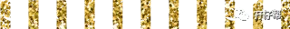